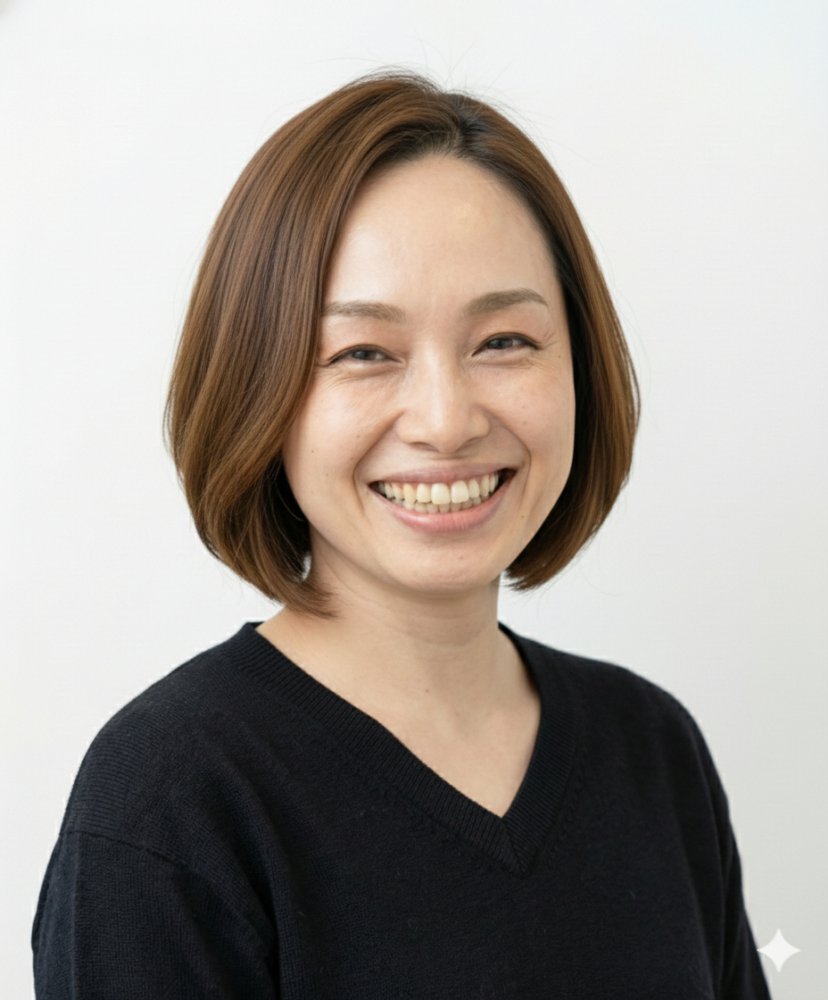

無料オンライン個別相談
その声で、
相手は動いていますか。
同じ話でも、
声で伝わり方は変わります。
あなたの声には、まだ
乗っていない魅力があります。
まずは、その現在地を
一緒に知ることから。
ふと、思うこと
あの人の話は、なぜかスッと入ってくる。
会議でも、プレゼンでも、配信でも。
自然と相手が耳を傾ける、あの声。
あんなふうに話せたら、と思ったことはありませんか。
あれは、生まれ持った才能なのでしょうか。
CAUSE
伝わる声は、生まれつきでも
才能でもありません。
声は「技術」です。
相手に届くかどうかを決めているのは、声質でも、滑舌でもありません。息の使い方と、声を響かせる場所です。
多くの人が、そこを一度も教わらないまま、なんとなく声を出しています。
だから、知らなかっただけ。あなたの努力が足りなかったわけではありません。
SOLUTION
響かせる場所が変わると、
相手の受け取り方が変わる。
わたしのレッスンでは、まず今の声の使い方を見ます。
息がどこで止まっているか。どこで響かせているか。
ほんの少し変えるだけで、声は前に出て、深くなり、長く話しても疲れなくなります。
「頑張って大きな声を出す」の、逆です。
力を抜くほど、届く声になります。
CHANGE
相手が身を乗り出す声、
信頼される声へ。
BEFORE
力で押し出していて、後半で声がもたない
録音を聞き返すと「こんな声だっけ」と感じる
話し終わると、喉がどっと疲れている
↓
AFTER
息に乗る、楽な声になる
1時間以上話しても、声が枯れにくい
「聞こえやすい」「わかりやすい」と言われる
無料オンライン個別相談
まず、あなたの声の「現在地」を
一緒に知りませんか。
あなたの声の悩みを聞かせてください。
声のプロの視点で、今どこにいて、何を変えると近づくのかを、一緒に整理します。
ひとつでも、ありませんか
どれか、心当たりはありませんか？
- 大事な商談やプレゼンで、あと一歩、伝えきりたい
- 配信や動画で、自分の声がなんとなく気になる
- 長く話すと、後半で声がもたない
当日までの流れ
- 下のフォームから申し込む
- 日程を調整する
- オンラインで個別相談を受ける
ABOUT
声を聞けば、猫背が分かる。
20年、声だけを見てきました。

ボイストレーナーみか
ボイストレーナー／Udemy講師
どうも、ボイストレーナーみかです。
ボイストレーナー歴20年。Udemyでも声の講座を出しています。
たくさんの声を聴いてきたおかげで、今では声を聞くだけで、その人の姿勢や息の使い方が分かるようになりました。
20ボイストレーナー歴（年）
Udemy声の講座を配信中
レッスンでいただく声
「声の出し方が変わった！すごい！」
「今まで、頑張り方を間違えてた。」
「こんなにラクに出せるようになるんですね。」
「私の声って、こんなに表現力があったんですね。」
FAQ
よくあるご質問
顔出しは必要ですか？
必須ではありません。声だけで猫背が分かるボイストレーナーですので（笑）、声を聞かせていただければ大丈夫です。
何を準備すればいいですか？
特にありません。今の声の悩みや、なりたい声を思い浮かべてきていただけると、話がスムーズです。
歌のレッスンですか？
いいえ。話す声、伝える声が中心です。人前で話す・配信する・伝える場面のための声を扱います。
LAST
声は、変えられます。
まずは、知ることから。
生まれ持った声を、否定する必要はありません。
あなたの声には、まだ引き出されていない魅力があります。
それを一緒に見つけるところから、始めましょう。